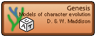

|
 |
Genesis: probabilistic models of character evolution for Mesquite |
August 2005
Genesis is a Mesquite package providing models of character evolution. Currently these are only available for use in simulations, but will eventually be available for estimation methods such as maximum likelihood.
The Genesis package includes models in several classes:
Each of these model classes as one or more default models specified in Mesquite:
In addition, you can create some additional models by specifying parameter values of some partly-specified models:
| Model type |
Parameter to specify |
| User-defined Frequency model |
The frequency of A, C, G, and T |
| Model type |
Parameter to specify |
| Proportion Invariant models |
The proportion of characters that are not free to vary. |
| Gamma distribution models |
The shape parameter of the gamma distribution. |
| Gamma distribution + Proportion invariant models |
The shape parameter of the gamma distribution and the proportion of characters that are not free to vary. |
The Gamma distribution is implemented using calculations done by the JSci library by Hale, van Kooten, and others.
|
Model type |
Parameter to specify |
|
TiTv models |
The transition/transversion ratio. |
|
GTR model |
Rates of change A-C, A-G, A-T, C-G, C-T relative to (rate G-T) =1 |
Many more models will be added. The GTR model is implemented using calculations done by the PAL library by Drummond and Strimmer.
To install the Genesis package, the "genesis" directory must be installed in the "mesquite" directory within "Mesquite Folder". The PAL library needs also to be installed; to see that it is, see that there is a "pal" directory within "Mesquite Folder". JSci should also be present, as a "JSci" directory within "Mesquite Folder". If either is not installed, then you should download the latest version of Mesquite from Mesquite's web site, which should contain PAL and JSci.
Before models can be used, they must exist. The pre-defined, fully-specified models already exist, but to use the partly-specified models (such as a gamma distribution character rate model), you will need to create a new character model using the submenus of the New Character Model item in the Character menu.
For example, to create a model that specifies a gamma rate variation model with shape parameter of 0.8, choose Gamma Rate Variation Model from the New Character Model submenu. You will presented with a dialog box in which you can name your model (e.g., "Gamma 0.8" or "Gamma for simulations"), and then another dialog box in which you can specify the value of the shape parameter:
Once defined, this model will then be available for use in Mesquite. Similarly, a GTR rate matrix model may be defined in this dialog:
One context in which you can now use a model is to create simulated matrices or characters. These will be created by simulating evolution up the branches of a particular tree, using the models of evolution that you specify. You will be asked to specify a composite model in a dialog box that looks something like this:
Choose the relevant submodels in each of the popdown menus. Before a submodel can appear in the popdown menu, it must be created (see preceding section).
Note the scaling factor. This allows you to scale the entire rate of evolution according to the tree (for instance, if the trees branches are measured in years, a low scaling factor would be needed to make a reasonable rate of substitution.
Some examples of Genesis's use are provided in the Studies in the Mesquite manual.
See the page "Genesis: tests of simulation modules" for some empirical studies of the quality of Genesis's simulations.
© David Maddison & Wayne Maddison, 2001-2005